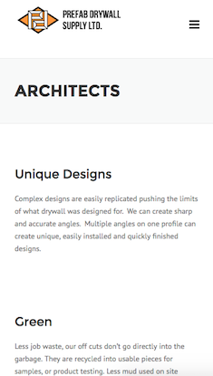
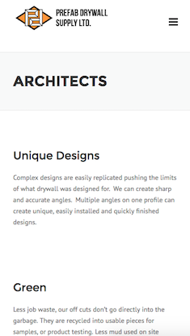
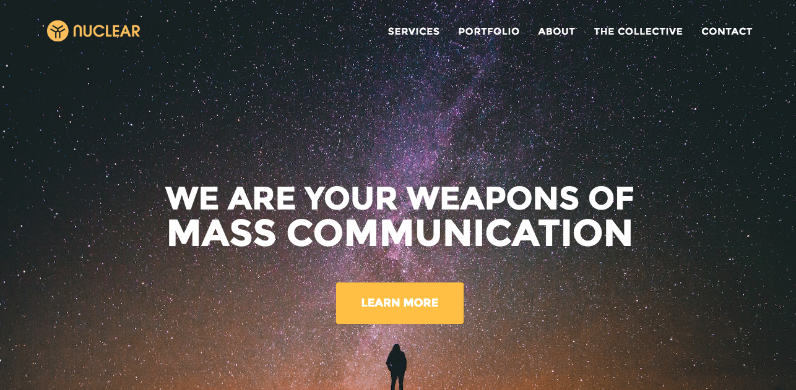
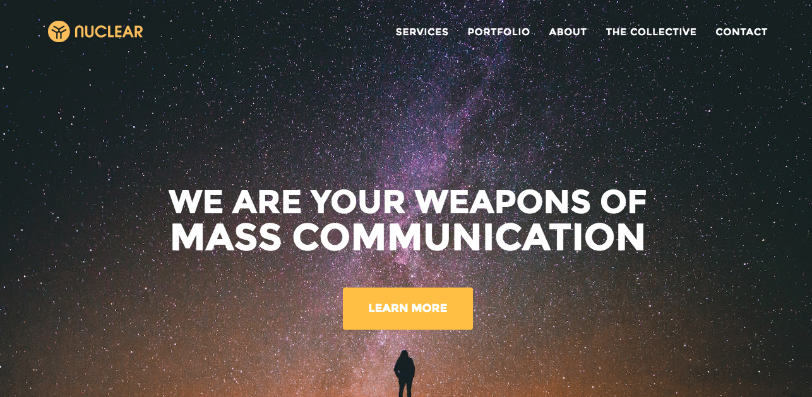

Hello!
Enthusiastic Junior Developer with full-stack skills. Previous role focused on front-end development of a small start-up's proprietary content management system, and commercial websites. Experience developing web apps and static sites, customizing a range of templates and themes, including Woocommere and Wordpress. Confident using FTP based development environments, Git/Github, JIRA for project management, and ReactJS.


 

 
